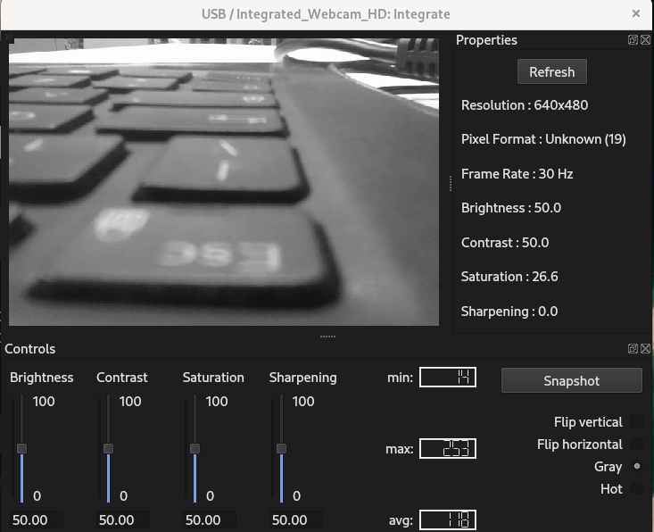

Camera Configuration
Camera support depends on build options and installed SDKs. Typical backends include:
-
FireWire cameras compliant with IIDC/DCAM (IEEE1394).
See Damien Douxchamps' camera list.
- GigE Vision cameras via the Aravis library.
- Andor Neo/Zyla (CameraLink) with the vendor SDK and a frame grabber.
- Raptor cameras (Falcon, Ninox640) with the vendor SDK.
- Allied Vision cameras via VimbaX.
- Raspberry Pi camera (when enabled).
- USB cameras (UVC) when enabled.
On startup, connected cameras are added to the Instruments menu. Selecting a camera opens
a live view window; frame rate depends on resolution and workstation graphics capability.
The camera window exposes common controls such as exposure and gain when supported by the device.

OpticsBenchUI
Last modified: Fri Jul 20 15:00:44 CEST 2012